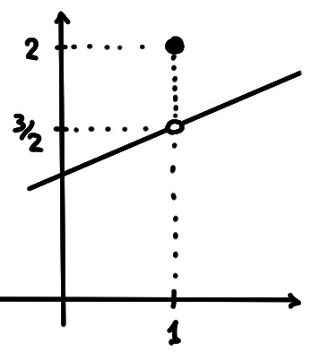
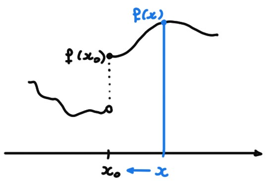

La continuité
est la condition de
régularité la plus naturelle que l'on puisse associer à une fonction \(f\)
en un point \(x_0\). Elle impose que les valeurs de \(f(x)\), pour \(x\) dans un
petit
voisinage de \(x_0\) soient proches de la valeur
de \(f(x_0)\). Cette condition se formule très efficacement à l'aide
de la notion de limite:
Soit \(f:D\mapsto \mathbb{R}\), où \(D\subset \mathbb{R}\) est un ensemble ouvert, et soit
\(x_0\in D\). Si
\[\lim_{x\to x_0} f(x)=f(x_0)\,,\]
on dit que \(f\) est continue en \(x_0\). Si la limite n'existe pas, ou
si elle existe mais est différente de \(f(x_0)\), on dit
qu'elle est discontinue en \(x_0\).
Si une fonction est continue en tout
point \(x_0\in D\), on dira simplement qu'elle est continue sur \(D\).
Soit
\[
f(x):=
\begin{cases}
\frac{x}{2}+1&\text{ si }x\neq 1\,,\\
2&\text{ si }x=1\,.
\end{cases}
\]
Elle n'est pas continue en \(x_0=1\), puisque \(\lim_{x\to 1}f(x)=\frac32\),
alors que \(f(1)=2\), et donc
\[
\lim_{x\to 1}f(x)\neq f(1)\,.
\]

Par contre \(f\) est continue partout ailleurs. En effet, si \(x_0\neq 1\),
alors
\[
\lim_{x\to x_0}f(x)=\lim_{x\to x_0}(\frac{x}{2}+1)=\frac{x_0}{2}+1=f(x_0)\,.
\]
Si une fonction est continue sur un intervalle, elle ne possède aucune
discontinuité, donc
on peut en principe tracer son graphe ''sans devoir lever le crayon''.
Les fonctions qui sont des
sommes, produits, quotients (lorsqu'ils sont bien définis) et composées
de fonctions continues sont continues.
Ces propriétés suivent directement des propriétés de la limite.
Continuité des fonctions élémentaires
La plupart des fonctions fondamentales de l'analyse, tels polynômes, fonctions
trigonométriques, exponentielles et logarithmes, sont des fonctions continues
(sur leur domaine).
Tout polynôme \(x\mapsto P(x)\) est continu sur \(\mathbb{R}\).
Les fonctions trigonométriques
\(\sin(x)\) et \(\cos(x)\) sont continues sur \(\mathbb{R}\);
\(\tan (x)\) est continue sur
\(\mathbb{R}\setminus \{\tfrac{\pi}{2}+k\pi\,|\,k\in\mathbb{Z}\}\),
Pour toute base \(a>0\), \(a^x\) est continue sur \(\mathbb{R}\).
Pour toute base \(a>0\), \(\log_a(x)\) est continue
sur \(\mathbb{R}_+^*\).
Continuité latérale
Il se peut que la notion de continuité en un point soit valide dans un sens plus
faible:
On dit que \(f\) est continue à gauche en \(x_0\) si
\(\displaystyle \lim_{x\to x_0^-} f(x)=f(x_0)\).
On dit que \(f\) est continue à droite en \(x_0\) si
\(\displaystyle \lim_{x\to x_0^+} f(x)=f(x_0)\).
Graphe d'une fonction continue à droite (mais pas à gauche)
en \(x_0\):

\(f\) est continue en \(x_0\) si et seulement elle est continue à gauche et à
droite en \(x_0\).
Est une conséquence de l'équivalence entre limite et égalité des limites
latérales.
Des fonctions discontinues partout
Même si la plupart des fonctions élémentaires sont continues sur leur domaine,
il existe des fonctions qui ne sont continues nulle part.
La fonction
\[
f(x):=
\begin{cases}
1&\text{ si }x\in \mathbb{Q}\,,\\
0&\text{ si }x\in \mathbb{R}\setminus\mathbb{Q}\,
\end{cases}
\]
est discontinue en tout \(x_0\in \mathbb{R}\).
Vrai ou faux?
[ ]
Si \(f\) est continue en \(x_1\) et \(g\) est continue en \(x_2\), alors
\(f+g\) est continue en \(x_1+x_2\).
[ ]
Si \(f\) et \(g\) sont toutes deux discontinues en \(x_0\), alors
\(f+g\) est aussi discontinue en \(x_0\).
[ ]
Si \(f\) est continue en \(x_0\) et \(g\) est discontinue en \(x_0\), alors
\(f+g\) est discontinue en \(x_0\).
[ ] Si \(f\) est continue en \(x_*\) et si \(y_n\to x_*\),
alors \(f(y_n)\to f(x_*)\).
[ ] Soit \(x_0\in \mathbb{R}\).
Si il existe deux suites \((a_n)\) et \((b_n)\) telles que
\(a_n\to x_0\),
\(b_n\to x_0\),
\(f(a_n)\to
L_1\), \(f(b_n)\to L_2\), avec \(L_1\neq L_2\), alors \(f\) est discontinue en
\(x_0\).
[ ] Si \(f\) est continue en \(x_0\), alors \(f\) est continue en tout
point \(x_0'\) suffisamment proche de \(x_0\).
[ ] Si \(f\) est continue en \(x_0\) et si \(f(x_0)\neq 0\), alors
\(f(x)\neq 0\) pour tout \(x\) suffisamment proche de \(x_0\).
[ ] Si \(f\) est discontinue en \(x_0\) et si \(f(x_0)=0\), alors
\(f(x_0-\varepsilon)f(x_0+\varepsilon)<0\) pour tout \(\varepsilon>0\) suffisamment
petit.